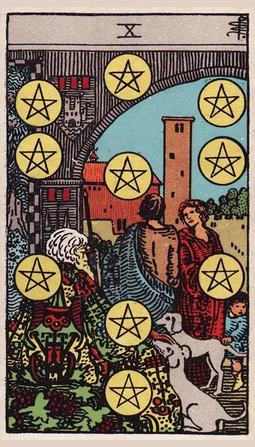

正位置ペンタクルの10の正位置
キーワード：繁栄・家族・長く続く安定
恋愛
将来を見据えた、安定した関係を築ける時です。
相手の気持ちあなたとの将来を、真剣に考えているようです。
この先結婚や、長く続く関係に進みそうです。
アドバイス将来のことを、具体的に話し合いましょう。
気をつけること家のことや条件ばかりに、目を向けすぎないように。
この先結婚や、長く続く関係に進みそうです。
アドバイス将来のことを、具体的に話し合いましょう。
気をつけること家のことや条件ばかりに、目を向けすぎないように。
人間関係
家族や長年の縁が、支えになる時です。
相手の気持ちあなたを、家族のように大切に思っているようです。
この先家族や仲間との絆が、深まりそうです。
アドバイス家族や親しい人との時間を、大切にしましょう。
気をつけること伝統や習慣を、押しつけないように。
この先家族や仲間との絆が、深まりそうです。
アドバイス家族や親しい人との時間を、大切にしましょう。
気をつけること伝統や習慣を、押しつけないように。
仕事・学業
長く続く成功や、安定を得られる時期です。
この先長く続く成果を、手にできそうです。
アドバイス長い目で見て、計画を立てましょう。
気をつけること安定に甘えて、変化を拒まないように。
アドバイス長い目で見て、計画を立てましょう。
気をつけること安定に甘えて、変化を拒まないように。
お金
長い目で見た、お金の安定が得られる時です。
この先長く続く安定が得られそうです。
アドバイス将来に向けた備えを、考えましょう。
気をつけること大きなお金の判断は、慎重に。
アドバイス将来に向けた備えを、考えましょう。
気をつけること大きなお金の判断は、慎重に。
生活
長く続く、安定した暮らしを築ける時です。
この先安心できる暮らしが続きそうです。
アドバイス家族や将来のことを、話し合いましょう。
気をつけること習慣にとらわれすぎないように。
アドバイス家族や将来のことを、話し合いましょう。
気をつけること習慣にとらわれすぎないように。
今日の運勢
家族や身近な人と、穏やかに過ごせる日です。
この先安心できる時間を過ごせそうです。
アドバイス家族に、感謝を伝えましょう。
気をつけることいつもの習慣に、とらわれすぎないように。
アドバイス家族に、感謝を伝えましょう。
気をつけることいつもの習慣に、とらわれすぎないように。
逆位置ペンタクルの10の逆位置
キーワード：家族の問題・不安定・価値観の違い
恋愛
家族や周りの意見に、関係が左右されやすい時です。
相手の気持ちあなたとの関係で、周りの目を気にしているようです。
この先話し合えば、理解が得られそうです。
アドバイス二人の気持ちを、まず大切にしましょう。
気をつけること周りの意見に、流されすぎないように。
この先話し合えば、理解が得られそうです。
アドバイス二人の気持ちを、まず大切にしましょう。
気をつけること周りの意見に、流されすぎないように。
人間関係
身近な人との価値観の違いが、出やすい時です。
相手の気持ちあなたとの価値観の違いを、気にしているようです。
この先違いを認め合えば、関係が落ち着きそうです。
アドバイス違いを認め合い、話し合いましょう。
気をつけること家族の問題を、一人で抱え込まないように。
この先違いを認め合えば、関係が落ち着きそうです。
アドバイス違いを認め合い、話し合いましょう。
気をつけること家族の問題を、一人で抱え込まないように。
仕事・学業
安定が揺らぎやすい時期です。
この先備えをしておけば、安定を取り戻せそうです。
アドバイス備えを見直し、万一に備えましょう。
気をつけること大きなお金の判断は、慎重にしましょう。
アドバイス備えを見直し、万一に備えましょう。
気をつけること大きなお金の判断は、慎重にしましょう。
お金
家族や身内のお金のことで、悩みやすい時です。
この先備えをしておけば、安定しそうです。
アドバイスお金のことは、はっきり話し合いましょう。
気をつけること感情的な言い合いにならないように。
アドバイスお金のことは、はっきり話し合いましょう。
気をつけること感情的な言い合いにならないように。
生活
家族の暮らしで、考えの違いが出やすい時です。
この先話し合えば、落ち着きそうです。
アドバイス家族と、落ち着いて話しましょう。
気をつけること一人で抱え込まないように。
アドバイス家族と、落ち着いて話しましょう。
気をつけること一人で抱え込まないように。
今日の運勢
家の中で、もめごとが起きやすい日です。
この先夜には、穏やかに過ごせそうです。
アドバイス家族と、落ち着いて話しましょう。
気をつけること感情的な言い合いにならないように。
アドバイス家族と、落ち着いて話しましょう。
気をつけること感情的な言い合いにならないように。
このページの文章は、アプリ「ひとやすみタロット」の結果に使っている文章です。アプリでは、あなたの相談や、カードが出た位置（今の状況・これからの流れ・アドバイス）に合わせて、この中から文章を選びます。逆位置の読み方は逆位置のことをご覧ください。
「ペンタクルの10」が出たら、あなたの相談ではどう読む？
アプリでは、質問への答えに合わせて、カードの言葉をあなたの相談に合わせて届けます。
Android 対応・会員登録なし